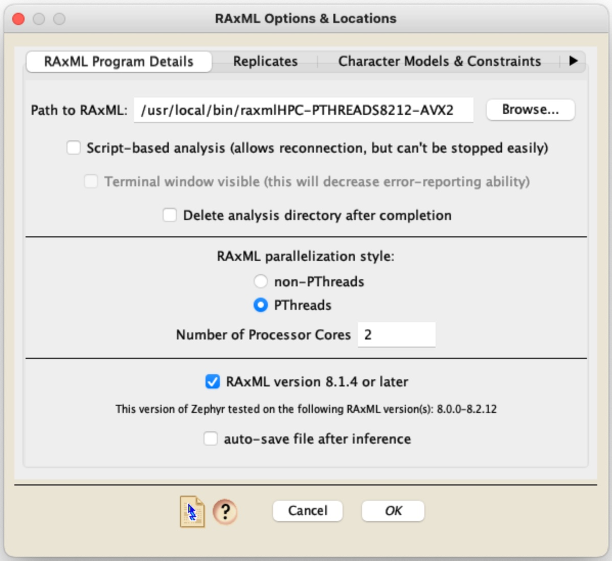
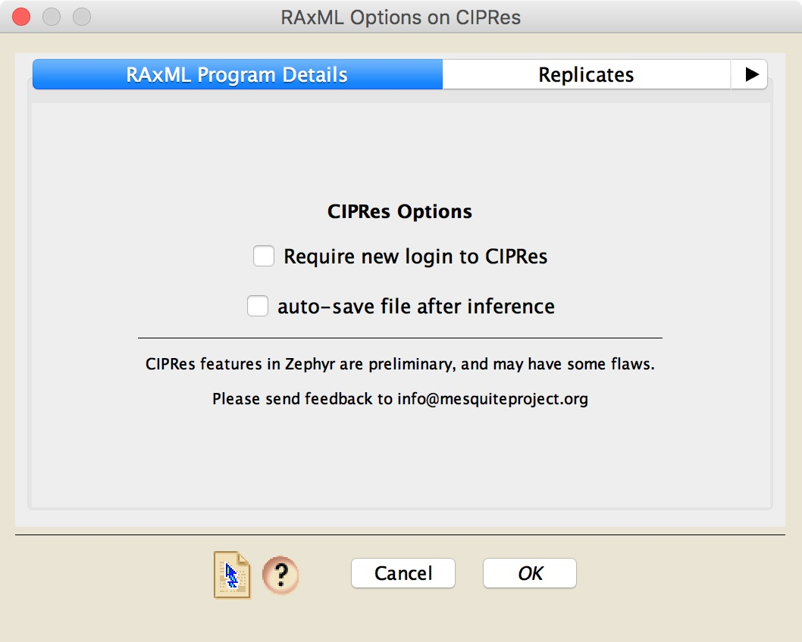
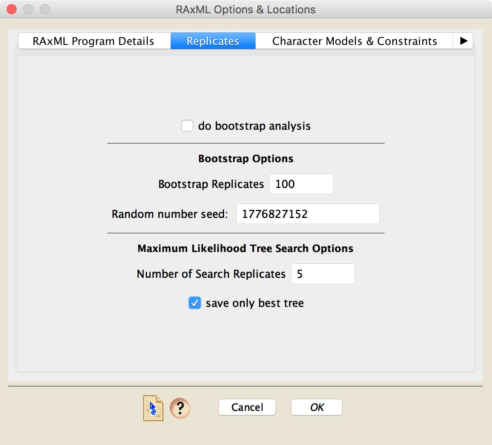
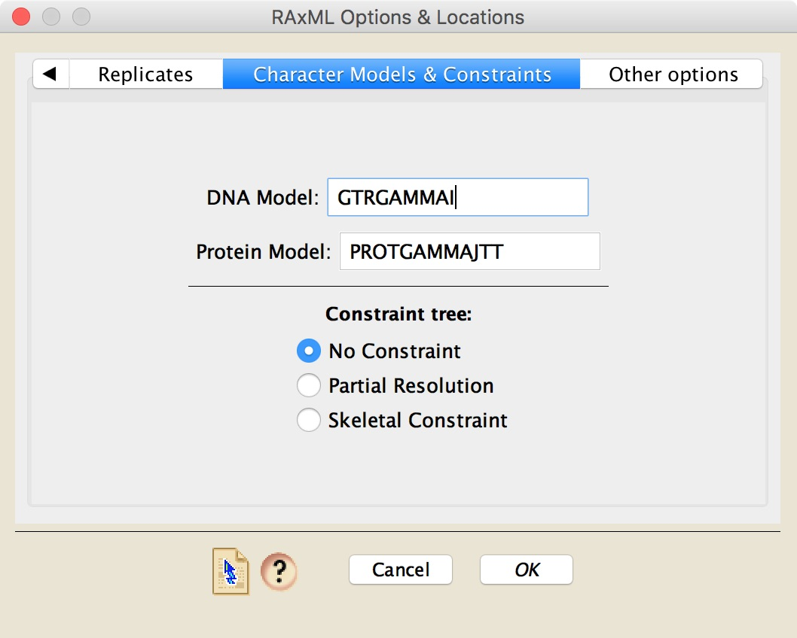
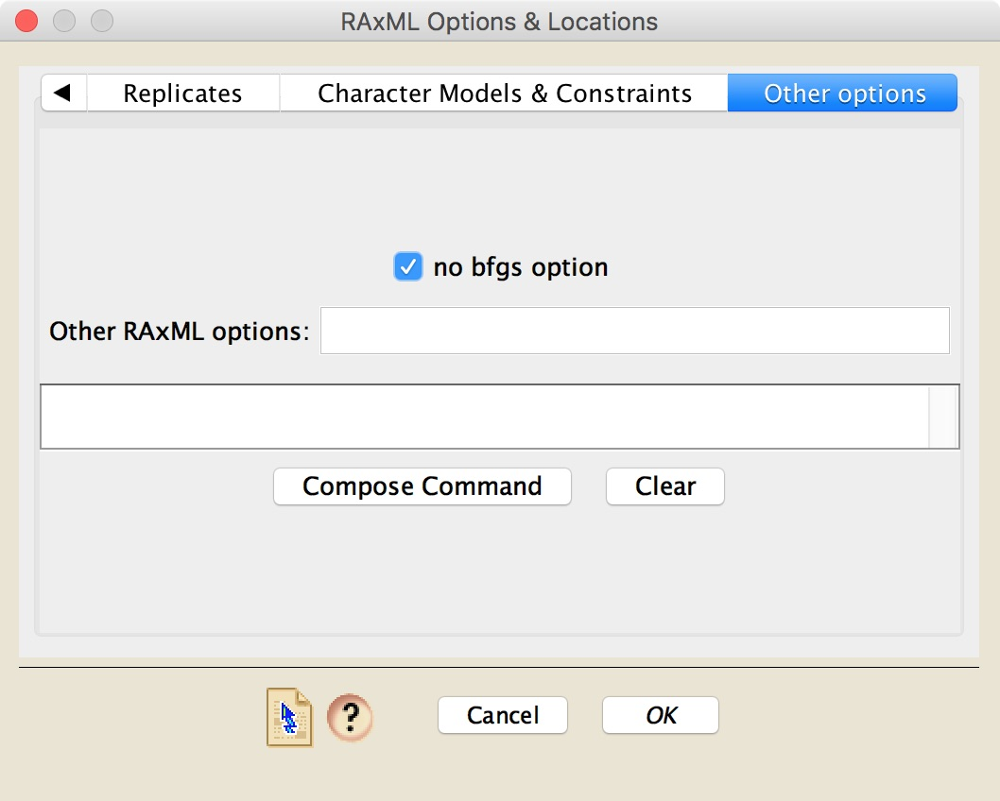

RAXML
RAxML is a program for maximum likelihood inference of phylogenies, written by Alexandros Stamatakis and other code contributors. For details about RAxML and how to acquire it for runs on your local computer, go to the RAxML web page.As of September 2017, the latest Windows version of RAxML is available from https://github.com/stamatak/standard-RAxML. For other operating systems (Mac, Linux), you will need to download the source (https://github.com/stamatak/standard-RAxML/releases) and compile the software yourself. (On the Mac, you can get the relevant software for compiling RAxML by downloading Xcode from https://developer.apple.com/xcode/)
If you use RAxML, please cite it appropriately as recommended in the program's documentation.
The Zephyr options available for RAxML are shown in four panels of the RAxML dialog box. The first panel is critical, as it includes basic setup details about RAxML; it varies depending upon whether you are running RAxML locally on your computer (the same computer that has Mesquite on it), or on CIPRes. If you have asked for the "RAxML Likelihood [Local]" option, then the dialog box will look like that shown on the left, and if you asked for the "RAxML Likelihood [CIPRes]" option, then it will look like that shown on the right:

RAxML Likelihood [Local]: If running RAxML on the same computer that has Mesquite on it, then in this panel you will need to first specify where on your computer's hard disk your copy of RAxML resides. The next few options (script-based, terminal, delete analysis directory) are discussed in the Local Analyses page. In this panel you will also need to choose whether or not the version of RAxML you are using is the PTHREADS version or not, and the number of processors you would like RAxML to use. Note as well the version number of RAxML that is needed for the particular installation of Zephyr that you have running; it should be stated in this panel.
Whether you are running RAxML locally or not, you have the option to automatically save the Mesquite file after the inference in completed and the phylogenetic trees moved into the file.
In the Replicates panel, you can choose whether to do a bootstrap analysis or a basic search of maximum likelihood trees for your data. If you choose to do a bootstrap analysis, you will need to determine the number of bootstrap replicates, as well as the random number seed. By default Zephyr will put a random number seed based upon the computer's clock, and thus each time you start a RAxML analysis the random number seed shown by default should be different.

The Character Models & Constraints panel has two options for the models to use, one for DNA data, and one for Protein data. In addition, you can choose to enforce a constraint tree. If you do choose to enforce a constraint, the tree to use as a constraint must be present in a Mesquite tree window in your project.

The last panel, "Other options", provides a field called "Other RAxML options" in which you can type RAxML commands yourself.

In addition, there is a "Compose Command" button that will take your options and show you the command that will be used to start RAxML and give it its options.
If you have done a non-bootstrap analysis, then Zephyr will read in the final likelihood score of each of the RAxML trees. These scores can be seen by choosing Taxa&Trees>List of Trees>[name of RAxML tree block], and once the window listing the trees is visible, choosing Columns>Number for Tree>RAxML Score. This is the value of ln Likelihood that RAxML first reports as it is finishing each replicate. You can also see the finalized, Gamma-based score by choosing Columns>Number for Tree>RAxML Final Gamma-Based Score. Note that the latter score might not be using the same model that you used to infer the trees.